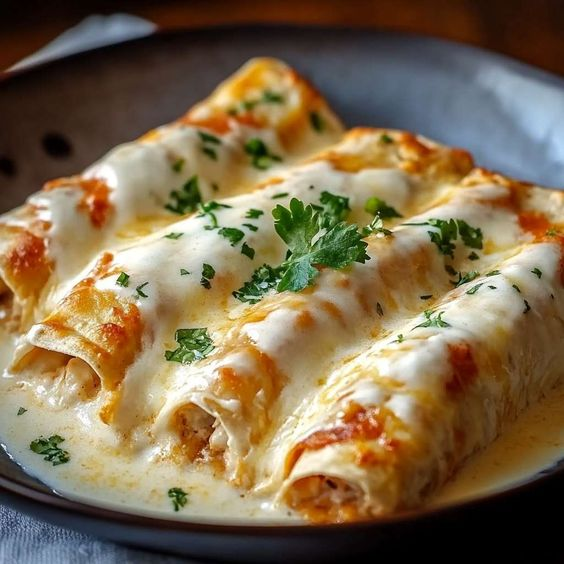

Chicken Enchiladas

A delicous plate of Chicken Enchiladas
These Chicken Enchiladas with Sour Cream White Sauce are a perfect blend of creamy and savory flavors. Ideal for family dinners or gatherings, this dish is sure to impress with its rich taste and delightful texture.
- 2 cups Chicken, cooked
- 1 cup Corn, frozen kernels
- 2 cloves Garlic
- 1 cup Green chilies
- 1 Onion, small
- 1 cup Chicken broth
- 1 tsp Chili powder
- 1 Salt and pepper
- 1 tbsp Olive oil
- 1 tsp Cumin, ground
- 8 Flour tortillas, small
- 1 cup Monterey jack cheese
- 1/2 cup Parmesan cheese, grated
- 1 cup Sour cream
Steps
- Preheat the oven to 350 degrees Fahrenheit (175 degrees Celsius).
- Heat olive oil in a large skillet over medium heat.
- Add the chopped onion and minced garlic to the skillet and sauté until the onions become translucent.
- Mix in the green chilies, frozen corn, and cooked chicken. Season with cumin, chili powder, salt, and pepper.
- Cook the mixture for about 5-7 minutes until everything is heated through and well combined.
- In a medium saucepan, warm the chicken broth over medium heat.
- Reduce the heat to low and stir in the sour cream until smooth.
- Add half of the grated Parmesan cheese to the sauce, stirring until the sauce is creamy and the cheese has melted.
- Season with additional salt and pepper to taste.
- Spoon the chicken mixture onto each flour tortilla.
- Roll up the tortillas and place them seam-side down in a lightly greased baking dish.
- Pour the sour cream white sauce over the rolled enchiladas.
- Sprinkle the top with Monterey Jack cheese and the remaining Parmesan cheese.
- Place the baking dish in the preheated oven.
- Bake for 20-25 minutes, or until the cheese is bubbly and lightly golden.
- Let the enchiladas cool for a few minutes before serving.
- Garnish with additional sour cream, chopped cilantro, or sliced green onions if desired.
Home Page